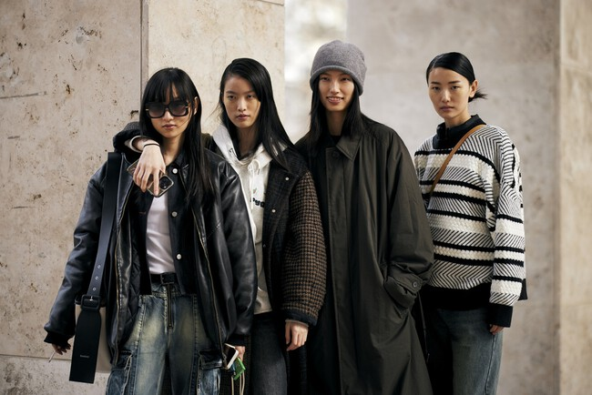
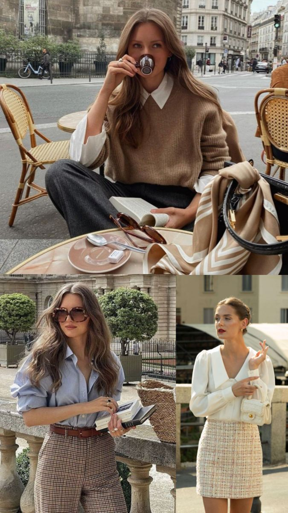

Luxury Girl
Asocia el éxito con marcas de lujo, viajes, exclusividad y consumo aspiracional. Construye una imagen vinculada al prestigio económico.
Las identidades estéticas son formas visuales mediante las cuales las personas comunican quiénes son o quiénes desean ser. A través de la ropa, las marcas, el maquillaje y las redes sociales, el consumo se convierte en una herramienta para construir pertenencia, reconocimiento y diferenciación.
Según Roberta Sassatelli, consumir no significa únicamente adquirir objetos: también implica producir significados sobre uno mismo. Las estéticas digitales funcionan como repertorios visuales que permiten a las personas expresar valores, aspiraciones e imaginarios culturales.
Asocia el éxito con marcas de lujo, viajes, exclusividad y consumo aspiracional. Construye una imagen vinculada al prestigio económico.

Propone una imagen minimalista, pulida y aparentemente natural. Se relaciona con bienestar, productividad y autocuidado.

Inspirada en la cultura urbana, el skate, el hip-hop y las colaboraciones entre marcas. Valora la autenticidad y la identidad colectiva.

Retoma códigos asociados a las élites tradicionales: sobriedad, discreción, ropa clásica y capital cultural heredado.

Estética romántica que recupera elementos asociados con la feminidad, la delicadeza y la nostalgia.
Pregunta para discutir: ¿Elegimos libremente estas identidades estéticas o son formas de pertenencia que aprendemos a través de los medios, las marcas y las redes sociales?